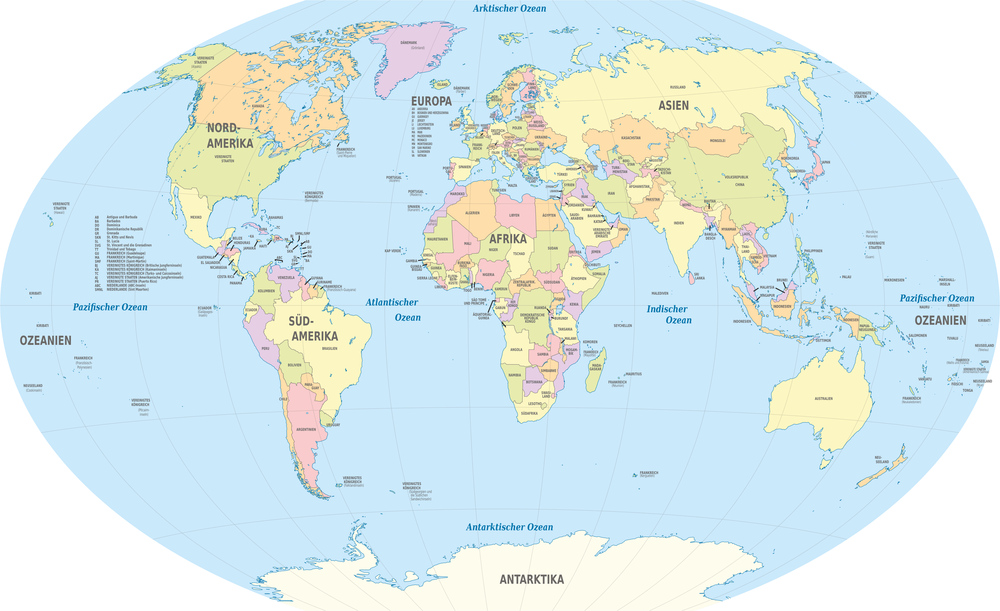
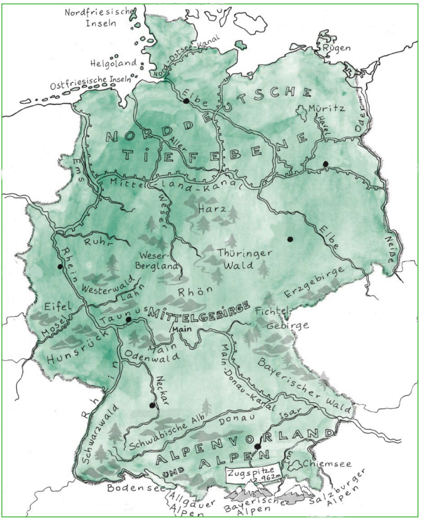

2 Wo ist Deutschland?
| Themen | Georgrafische Lage, Bevölkerung, Erdkunde |
| Lernziele | Sie lernen, Deutschland auf einer Karte zu verorten und ein paar Basics über Land und Leute zu nennen |
Wo ist China? Wo ist Deutschland? Finden Sie die Länder auf der Weltkarte!

Nennen Sie einige wichtig Tatsachen über China (z.B. Bevölkerungszahl, Hauptstadt, längster Fluss, …). Beraten Sie mit Ihrer Partnerin und notieren Sie. Teilen Sie Ihre Ergebnisse im Plenum und erstellen Sie eine Tabelle mit einer Spalte für China und einer Spalte für Deutschland.
| China | Deutschland | |
|---|---|---|
| Bevölkerungszahl | 1,44 Mrd. | … |
| Hauptstadt | Beijing | … |
| Längster Fluss | … | … |
| … | … | … |
Lesen Sie den Text über Deutschland. Notieren Sie die Antworten aus dem Text in Ihrer Tabelle oder recherchieren Sie im Internet. Arbeiten Sie mit Ihrer Partnerin. Lesen Sie den Text dann noch einmal und erweitern Sie Ihre Tabelle und ergänzen Sie Antworten für Deutschland und China.
Schauen Sie das Video Deutschland von oben. Was sehen Sie? Sammeln Sie im Plenum.
Sehen Sie die folgende Karte von Deutschland genau an und bearbeiten Sie dann die Aufgaben in kleinen Gruppen. Wenn nötig, recherchieren Sie im Internet.

- Finden Sie die im Text in den blauen Auf einen Blick-Kästen erwähnten Berge, Flüsse und Seen und markieren Sie die Namen auf der Karte.
- Ergänzen Sie die deutschen Meere Nordsee und Ostsee auf der Karte.
- Ergänzen Sie die Städte Berlin, München, Leipzig, Hamburg, Köln und Stuttgart (schwarze Punkte auf der Karte).
- Ergänzen Sie die deutschen Nachbarländer Österreich, Luxemburg, Frankreich, Belgien, Polen, Niederlande, Schweiz, Tschechiche Republik und Dänemark.
Betrachten Sie die folgende Karte. Sie zeigt die Verteilung der Bevölkerung in Deutschland. Welche Schlussfolgerungen können Sie aus der Karte ziehen? Überlegen und diskutieren Sie in kleinen Gruppen. Formulieren Sie drei Aussagen.

Die Karte zeigt, dass …
Nach dieser Karte wohnen / leben die meisten / nur wenige Deutsche …
Aus der Karte ergibt sich, dass …
Denken Sie noch einmal an die heutige Stunde. Was war für Sie überraschend? Formulieren Sie einen Satz.
Laden Sie das Buch Tatsachen über Deutschland herunter. Lesen Sie die Seiten 10-13 über Bevölkerung (Demografie) und Geografie und Klima.
| Deutsch | Chinesisch |
 ) ) |
 |